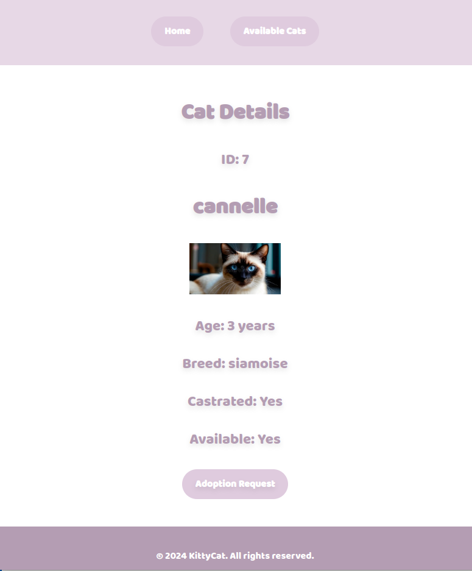

Detailed Cat Profiles
Browse through detailed profiles to find the perfect cat for you.
Easy Adoption Process
Enjoy a seamless and straightforward adoption process.
Search and Filter Options
Use advanced search and filter options to find your ideal feline friend.
About KittyCat
KittyCat was inspired by my passion for helping animals find loving homes. I wanted to create a platform where people could easily find and adopt cats in need. This project has been a personal journey of learning and development, and it’s a part of my portfolio for Holberton School. You can view the code on GitHub.
Connect with me: